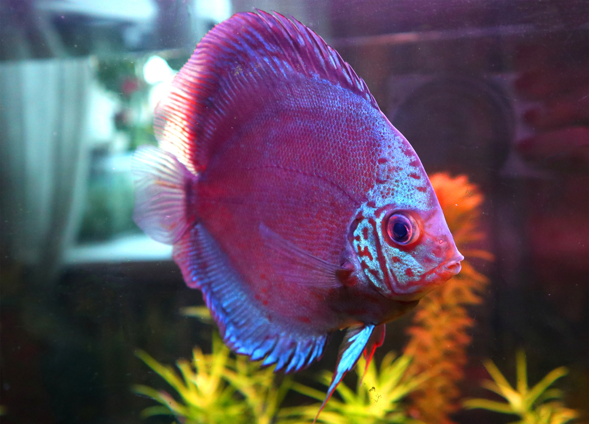
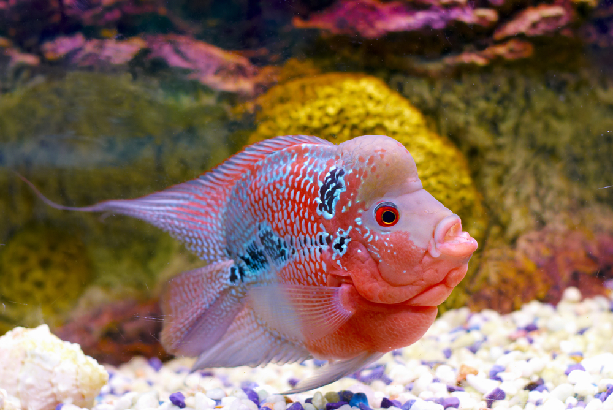
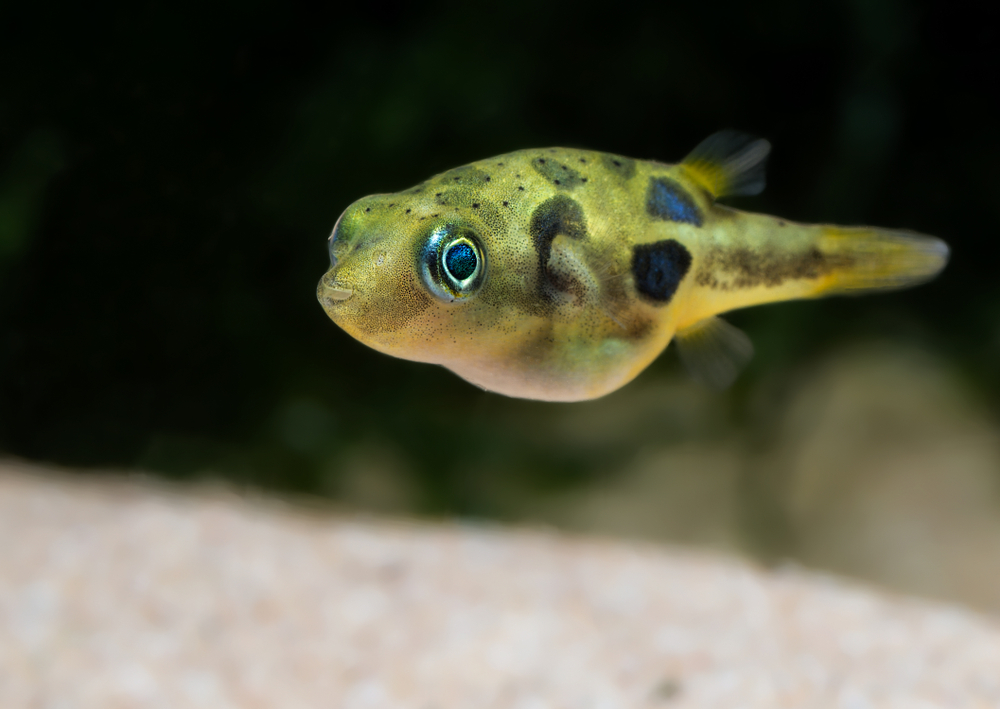
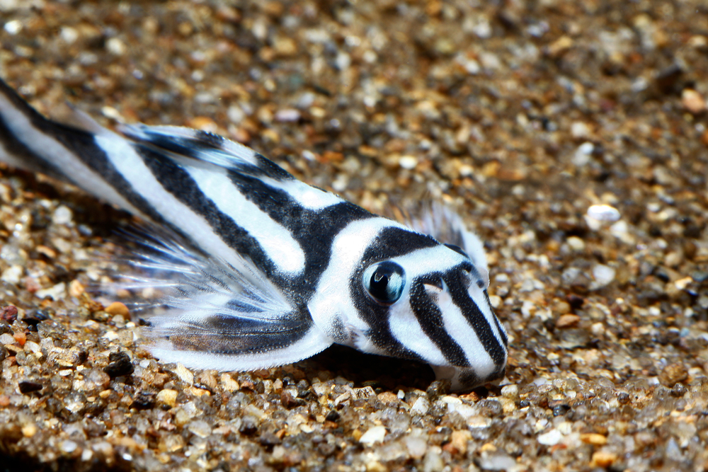
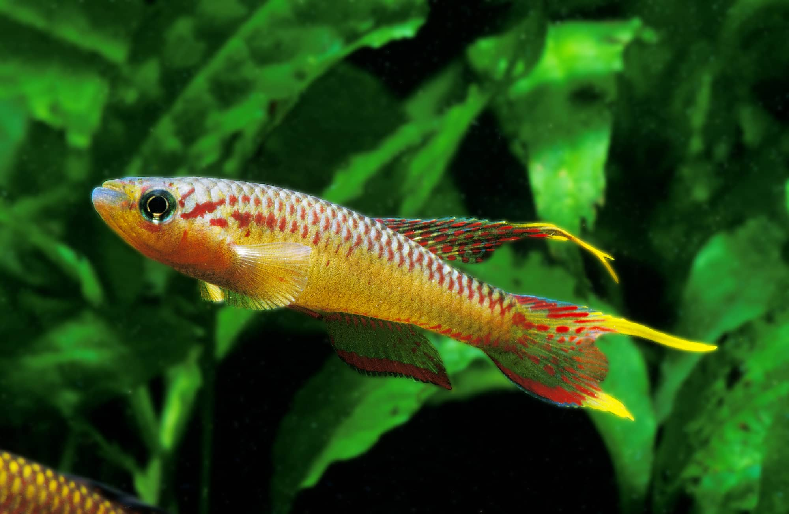

- Name: Phillip
- Species: Discus
- Location: Amazon River Delta
- Length: 10 inches
- Diet: Algae Flakes, Tropical Flakes, Shrimp Pellets
Phillip, and all Discus, require a minimum of 75 gallons of water in their tank.Feeding can be difficult, since the Discus feeds from the bottom of the tank.

- Name: Norbert
- Species: Flowerhorn Cichlid
- Location: Malaysia
- Length: 12 inches
- Diet: Crickets, Mealworms, Frozen Shrimp
Norbert loves to bond with his owner, but hates sharing attention. If you're part of the Flowerhorn's tribe, you'll get along swimmingly. Otherwise Norbert and his kind cand become aggressive. If you have multiple Flowerhorn, give them space to breathe to prevent fights--75 gallons per fish!

- Name: Dwayne
- Species: Dwarf Puffer
- Location: SW India
- Length: 2 inches
- Diet: Shrimp, Bloodworms, Snails
One could say that Dwarf Puffers like Dwayne have quite the Napoleon complex. Though small in size, the dwarf puffer bullies its tank mates. Dwayne needs a minimum od 10 gallons of water.

- Name: Bartholomew
- Species: Zebra Pelcos
- Location: Amazon River
- Length: 3.5 inches
- Diet: Shrimp, Bloodworms, Peas, Zucchini
Bart is quite the introvert, chosing to remained concealed behind rocks and in caves. The Zebra Pelcos gets along well with similarly striped specimen and prefers warm, oxygen-rich tanks with at least 30 gallons. Just be sure to include some hideaways, just in case they're feeling shy.

- Name: Henry
- Species: Golden Wonder Killifish
- Location: Africa
- Length: 3.5 inches
- Diet: White Worms, Brine Shrimp, Tubifex
The Golden Wonder Killifish are spunky fellas! Henry spends his time in the top of the water column but is also comfortable elsewhere, so long as there is food to be found. These fish are wonders, due to their iridescent yellow hue and adaptability. Though they will feel at home in any aquarium, they do prefer soft, slightly acidic waters between 72 and 75 F.